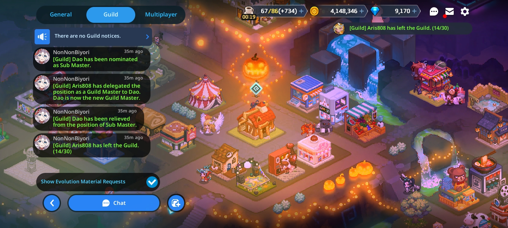
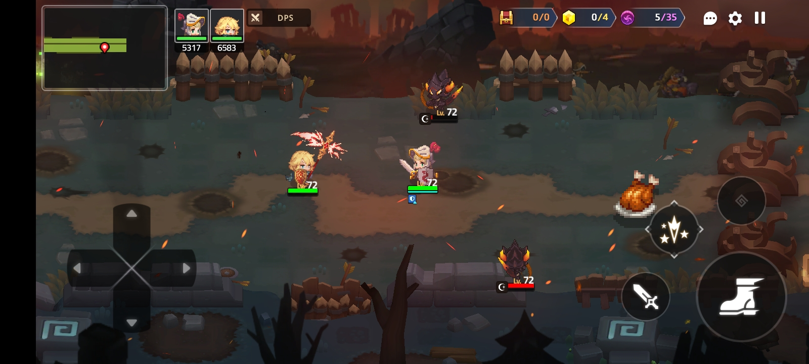
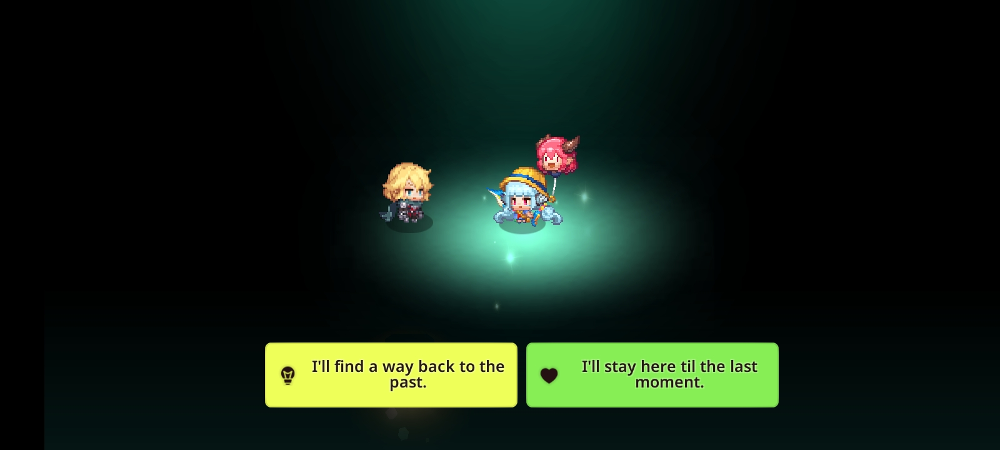
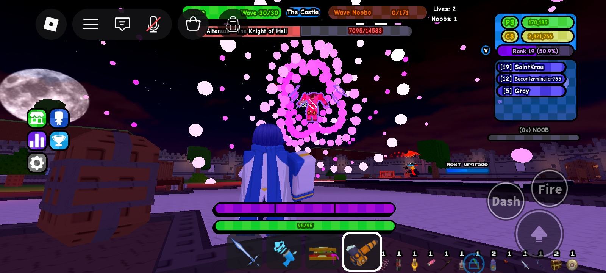
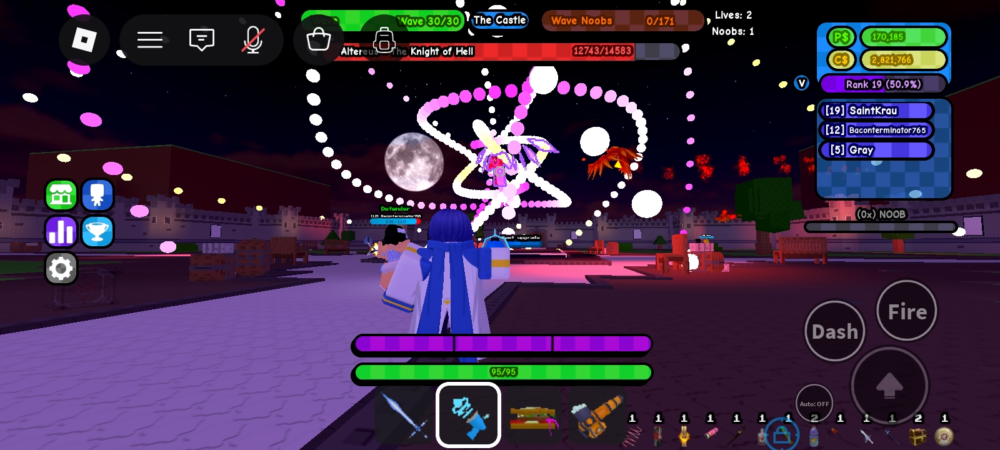
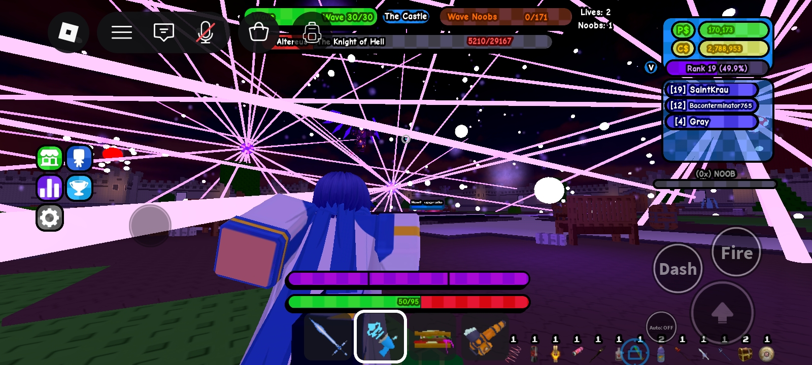
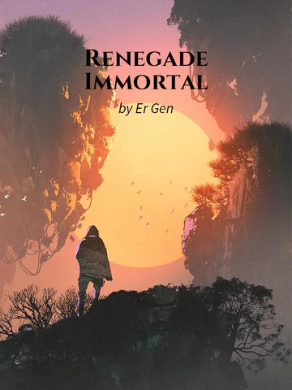
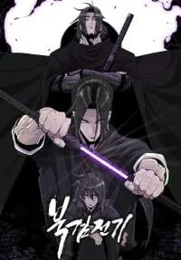

Autumn · Stories that inspire me
Worlds and ideas I carry with me
Guardian Tales:



Ever since I was a child, I have always been enticed by stories of sacrifice and honor, of how it is to
be a knight who learned to protect others and stand-up against the forces of evil.
Guardian Tales is one of the games I guinenly fell in-love with.
A game still even at this moment, I choose to log-in every night before I go to bed.
A simple story with a real heart that aims to inspire others who are also pulled into its wonderful
world.
Roblox



I do not have alot of options in choosing what to play when I was a child.
Within this game, hold memories of my childhood. Where I would play with my cousinsa and some of my few
close friends.
I do not really play this game anymore. But if not for these game, I probably would never have been
interested in coding.
This game act as one of my inspirations to keep improving my skills and technical literacy, desiring to
create a game of my own that holds my vision of how a proper game should be done.
Vinland Saga:
“Love your enemies, do good to them that hate you, pray for those who persecute you, so that you may be
sons of father who is in heaven for he saw to it his son would rise in both evil and the good, sends his
rain upon righteous and brings famine to the just and unjust, for if you only love those who love you
what reward do you have? Therefore you are called to be perfect, as your father in heaven, you shall
show love as your heavenly father loves you.”
Vinland Saga: Season 2, episode 13
Sometimes I find myself lost in the thoughts of life. I find it strange that people can be kind to others
and in the same moment also despise them.
This story kinda reminds me of myself, lost in rage I found my way. Learning to forgive and love one
another.
I do not think myself that I am a kind person. I can also feel jealousy and a certain emptiness.
But through this endless void we called life, I will always find a way to seek the light.
Renegade Immortality

To cultivate the heart is to reflect upon the world. To see mortal desires and understand life.
Within the stories about immortal heroes(Xianxia), such works of fiction where humans have long surpassed
their limit and achieved acsencion, beliefs and faith become prominent.
I have always been interested in the terms of fate and destiny. Not to follow it but instead to create
your path and to write your own story.
Such stories that question your morality always intrigues me. Showing the teachings of Confucianism,
Taoism, Buddhism and many other beliefs of old. The clashing of ideals that helped me shape as a person
and develop my own judgement that is all my own.
Legend Of The Northern Blade

“I didn't climb in order to diminish my weakness. I climbed in order to build and solidify the foundation
of my will. If I falter now, everything my father did and the life he gave up would all be gone to
waste.”
In a world of chaos, where the ages of war come and go like endless sea of stars, where the old powers
dies and is replaced anew.
Martial arts genre stand not for the righteous, unjust nor the demonic way, but to prove oneselves in the
challenges of life.
That is the reason why I like this type of genre. To rise to once weakness and be reborn anew as a
warrior who only seeks for his freedom and the desires hidden deep within once heart.